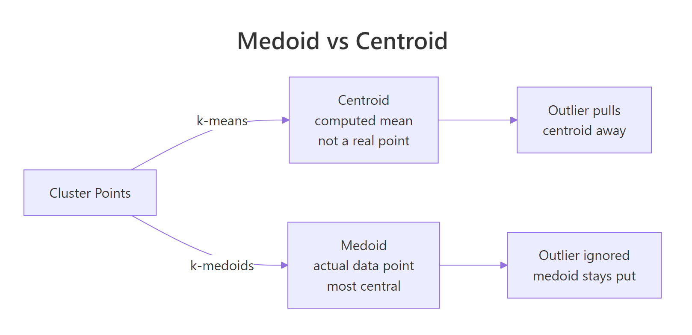
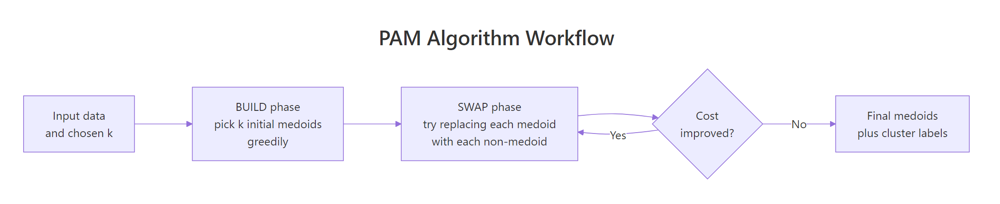

k-Medoids Clustering in R: PAM Algorithm & When to Prefer Over k-Means
k-medoids clustering picks an actual data point as each cluster's center, called a medoid, which makes it far more robust to outliers than k-means. This tutorial uses pam() from the cluster package in R to fit k-medoids, contrast it with k-means on dirty data, choose k with silhouette analysis, and handle mixed numeric and categorical features via Gower distance.
Why does k-medoids beat k-means when data has outliers?
k-means uses the arithmetic mean of a cluster's points as its center, so a single far-away outlier can drag that center across the plot and pull half the cluster with it. k-medoids picks an actual observation as the center, the medoid, and an outlier cannot move it. Drop one extreme point into a clean two-cluster dataset and watch what happens to k-means versus PAM.
The k-means centroid for cluster 2 has been pulled to roughly (5.29, 5.29) because it has to absorb the outlier at (20, 20). The PAM medoid for cluster 2 sits at (4.97, 5.01), an actual observation right where the cluster lives. The outlier is still assigned to cluster 2 in both, but only k-means lets that single point distort the center.

Figure 1: A medoid is one of the actual data points; a centroid is a computed mean that can sit anywhere.
Try it: Re-run the same comparison but make the outlier less extreme, at c(8, 8) instead of c(20, 20). Save the new k-means centers to ex_km_centers.
Click to reveal solution
Explanation: The outlier still pulls the cluster-2 centroid, but only by about 0.06 units instead of 0.29. The smaller the outlier, the smaller the leverage, but the leverage is never zero for k-means.
How does the PAM algorithm pick its medoids?
PAM stands for Partitioning Around Medoids. It runs in two phases. The BUILD phase greedily picks k initial medoids by adding, one at a time, the data point that gives the largest reduction in total dissimilarity. The SWAP phase then tries every (medoid, non-medoid) swap and keeps any swap that lowers the total cost. SWAP repeats until no swap improves the result.

Figure 2: The PAM algorithm: a greedy BUILD phase picks initial medoids, then SWAP refines them until cost stops dropping.
The result object exposes the final medoids, the cluster label for every observation, and the total objective value. Inspecting these slots is how you read a PAM fit.
The three medoids are real iris flowers at rows 8, 79, and 113. The 150 observations are split into clusters of size 50, 62, and 38. The objective dropped from 0.67 (after BUILD) to 0.65 (after SWAP), telling you the SWAP phase actually refined the initial pick.
Try it: Print just the row indices of the three medoids and verify they belong to different Species in iris. Save the species vector to ex_med_species.
Click to reveal solution
Explanation: Indexing iris$Species by the medoid row indices returns the species of each chosen medoid. PAM correctly picks one representative flower from each species without seeing the labels.
How do you choose the number of clusters k for PAM?
The standard answer is the silhouette method: for each candidate k, fit PAM and compute the average silhouette width across all points. Silhouette width measures how much closer a point is to its own cluster than to the next-best cluster, so a higher average means tighter, more separated clusters. The best k is the one that maximizes this average.
fviz_nbclust() from factoextra automates the loop and plots the curve.
The curve peaks at k = 2 (around 0.58) and stays high but slightly lower at k = 3 (around 0.46). The "true" answer for iris is 3 species, but PAM only sees the geometry; versicolor and virginica overlap enough in petal/sepal space that two clusters look slightly cleaner than three. Use silhouette as a guide, then pick the k that matches your problem.
An average silhouette of 0.46 sits in the "weak structure" range (0.25–0.50), which matches the visual overlap between versicolor and virginica. If the value were below 0.25, the clusters would essentially be artifacts; above 0.50 means they hold up well.
Try it: Refit PAM with k = 4 and report the new average silhouette width. Save it to ex_silw4.
Click to reveal solution
Explanation: Adding a fourth cluster drops the average silhouette from 0.46 to 0.42. The fourth cluster carves up an existing group that was already cohesive, so silhouette penalizes the over-split.
How do you cluster mixed numeric and categorical data with Gower distance?
PAM only needs a dissimilarity matrix, not raw numeric features, so it handles mixed numeric + categorical + ordinal data as long as you can compute distances between rows. The standard choice for mixed-type data is Gower distance, computed by daisy() in the cluster package. Gower normalizes each variable's contribution to [0, 1] and uses an appropriate per-type distance: range-normalized absolute difference for numeric, mismatch for nominal factors, rank-based for ordered factors.
The recipe is daisy(metric = "gower") to build the distance matrix, then pam(diss = TRUE) to cluster on it.
PAM finds the obvious split: rows 1, 2, 7, 8 (young, low income, segment A, active) form cluster 1, the rest form cluster 2. Because the input was a dist object, pm_mix$medoids holds row indices instead of feature coordinates; pull the original rows with mixed_df[pm_mix$id.med, ] to inspect them.
daisy() if outliers are a concern.Try it: Add a logical column vip = c(TRUE, TRUE, FALSE, FALSE, FALSE, TRUE, FALSE, TRUE, FALSE, FALSE) to the data, recompute the Gower matrix, and refit PAM with k = 2. Save the cluster vector to ex_clusters.
Click to reveal solution
Explanation: daisy() treats logical columns as binary nominal factors, so the Gower formula extends to them automatically. The clustering is unchanged here because vip happens to align with the existing split, but on noisier data adding a discriminative logical column would shift cluster boundaries.
What if your dataset has 100,000 rows? Use CLARA
PAM's runtime scales as O(k(n-k)^2) per iteration, so it becomes painfully slow past about 5,000 rows and runs out of memory past about 20,000 (the dissimilarity matrix alone is n^2 / 2 entries). CLARA ("Clustering LARge Applications") is the workaround: it draws several random samples of the data, runs PAM on each, and keeps the best medoids. The clara() function lives in the same cluster package and takes the same k argument.
CLARA gives essentially the same answer PAM would, in a fraction of the time and memory. The samples = 5 argument controls how many random subsets it tries; sampsize controls how many rows in each subset. Defaults of samples = 5 and sampsize = 40 + 2*k work for many problems, but bumping samples to 10 or 20 stabilizes results on harder data.
pam() is exact and just as fast. CLARA trades a tiny amount of accuracy for the ability to run on millions of rows.Try it: Refit CLARA with samples = 20 and report whether the medoids change. Save the new model to ex_cl.
Click to reveal solution
Explanation: With 20 random subsets instead of 5, CLARA explores more candidate medoids and tends to land on slightly more central ones. The cluster assignments are unchanged here because the structure is so clean, but on noisier data more samples reduces variance between runs.
Practice Exercises
Exercise 1: PAM on scaled iris vs Species labels
Scale the four numeric columns of iris, fit PAM with k = 3, then build a confusion table comparing the cluster assignments to the true Species column. Save the PAM fit to my_pm and the table to my_tab.
Click to reveal solution
Explanation: PAM perfectly separates setosa (cluster 1) but mixes versicolor and virginica (clusters 2 and 3) because their petal and sepal measurements overlap. This matches what hierarchical clustering and k-means produce on iris, the data simply does not have three perfectly separable groups in feature space.
Exercise 2: Gower + PAM on mtcars with factor columns
Take mtcars, convert cyl, gear, and carb to factors, build a Gower dissimilarity matrix, and fit PAM with k = 3. Save the fit to my_pmcars and report the cluster sizes.
Click to reveal solution
Explanation: The three clusters roughly correspond to small/efficient cars, mid-range cars, and high-power cars, mixing numeric features (mpg, hp, wt) with categorical ones (cyl, gear, carb) in one distance metric. Without Gower you would have had to one-hot encode the factors and lose the per-type weighting.
Complete Example
The end-to-end PAM workflow on USArrests, a small dataset of US arrest rates per state.
Read the output top-down: silhouette pointed to two clusters, PAM split the 50 states into a high-crime group of 20 (anchored by Alabama) and a lower-crime group of 30 (anchored by New Hampshire), and the PCA visualization confirms the split aligns with the first principal component (overall arrest rate). This is the workflow you can drop on any new numeric dataset.
Summary
| Property | k-Means | k-Medoids (PAM) | CLARA |
|---|---|---|---|
| Cluster center type | Computed mean (any point in space) | Actual data point (medoid) | Actual data point (medoid) |
| Robustness to outliers | Poor (mean shifts) | Strong (medoid pinned) | Strong |
| Distance metrics supported | Euclidean only | Any (Manhattan, Gower, custom) | Any |
| Mixed-type data (Gower) | No | Yes | Yes |
| Need to specify k | Yes | Yes | Yes |
| Speed (n = 1k) | Fastest | Fast | Fast |
| Speed (n = 100k) | Fast | Infeasible | Fast |
| Recommended for | Large numeric data, clean | Small/mid data, outliers, mixed types | Large data with PAM-like behavior |
Reach for k-medoids when your data has outliers, when you need a distance metric other than Euclidean, or when columns mix numeric and categorical features. Reach for CLARA when your data is large enough that PAM's n^2 distance matrix would not fit in memory. Reach for k-means only on clean, large, numeric data where you do not care that the cluster centers are computed averages.
References
- Kaufman, L. & Rousseeuw, P. J. (1990). Finding Groups in Data: An Introduction to Cluster Analysis. Wiley.
- cluster package on CRAN. Link
- R documentation.
pam()reference. Link - Schubert, E. & Rousseeuw, P. J. (2019). Faster k-Medoids Clustering: Improving the PAM, CLARA, and CLARANS Algorithms. SISAP. Link
- Datanovia. K-Medoids in R: Algorithm and Practical Examples. Link
- STHDA. PAM clustering essentials. Link
- factoextra package. cluster visualization. Link
Continue Learning
- Clustering in R: k-Means vs Hierarchical vs DBSCAN, the parent guide that compares the three most popular clustering algorithms on the same dataset.
- DBSCAN Clustering in R, a density-based alternative for non-convex clusters and noise detection without picking
k. - PCA in R, a useful preprocessing step before clustering high-dimensional data, and the basis of
fviz_cluster()plots used above.